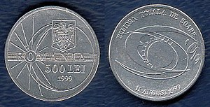
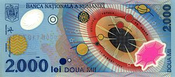

O eclipsa de soare se produce atunci cand satelitul natural al Pamantului,Luna,se interpune intre Soare si Pamant,Imaginea soarelui disparand total sau patial.
Eclipsele de Soare sunt fenomene rare care se observa numai din anumite locuri de pe glob,faza maxima,de totalitate,putand fi observata pe o fasie lata de 200 km
 "
Banda de totalitate a umbrei Lunii a inceput in Oceanul Atlantic,nu departe de Terra Nova,inainte de a tranversa,pe la orele 11,Cornwall,comitatul Devon,nordul Frantei,sudul Belgiei,Luxemburg,sudul Germaniei,Austria,nordul Serbiei,Romania,unde a avut loc maximul la Oceanele Marii,cat si India,sfarsinduse in apropierea coastelor indiene ale Golfului Bengal.
In Republica Moldova suprafata Soarelui Acoperita de Luna alcatuia 93%
Romania a fost punctul de maxima vizibilitate a eclipsei in Europa,iar Bucuresti a fost singura capitala europeana situata pe linia centrala a benzii de totalitate.
Eclipsa a avut o durata maxima atunci cand axa umbrei lunii s-a apropiat cel mai mult de centrul pamantului,la ora 1:03:04(GMT),moment de apogeu unde fenomenul a avut cea mai lunga durate-2 minute si 23 secunde.
"
Banda de totalitate a umbrei Lunii a inceput in Oceanul Atlantic,nu departe de Terra Nova,inainte de a tranversa,pe la orele 11,Cornwall,comitatul Devon,nordul Frantei,sudul Belgiei,Luxemburg,sudul Germaniei,Austria,nordul Serbiei,Romania,unde a avut loc maximul la Oceanele Marii,cat si India,sfarsinduse in apropierea coastelor indiene ale Golfului Bengal.
In Republica Moldova suprafata Soarelui Acoperita de Luna alcatuia 93%
Romania a fost punctul de maxima vizibilitate a eclipsei in Europa,iar Bucuresti a fost singura capitala europeana situata pe linia centrala a benzii de totalitate.
Eclipsa a avut o durata maxima atunci cand axa umbrei lunii s-a apropiat cel mai mult de centrul pamantului,la ora 1:03:04(GMT),moment de apogeu unde fenomenul a avut cea mai lunga durate-2 minute si 23 secunde.
" In 1990,Banca Nationala a Romaniei a emis o moneda de circulatie,cu valoarea nominala de 500 de lei pentru comemorarea evenimentului astronomic al anului,Eclipsa totala de Soare din 1999.
" Iar la 2 august 1999 Banca Nationala a Romaniei a emis o bacnota din polimeri cu valoarea niminala de 2.000 de lei.Aceasta find prima bacnita de polimeri emisa de Romania si tot odata prima bagnota de Polimeri emisa in Europa. Bibliografie:Toate informatiile si imaginile au fost luate de pe https://ro.wikipedia.org/wiki/Eclipsa_de_Soare_din_11_august_1999#, http://old.lefo.ro/carmensylva/curriculum/astronomie/eclipsa11aug.htm, https://www.agerpres.ro/documentare/2019/08/11/documentar-20-de-ani-de-la-eclipsa-totala-de-soare-din-1999-vizibila-din-romania--353746?fbclid=IwAR3mb29lemcjDAYFAd5osTXwgAPoiwkvR4hoxnDZHM6NeLp2uxkcB4kAwd4, https://www.youtube.com/